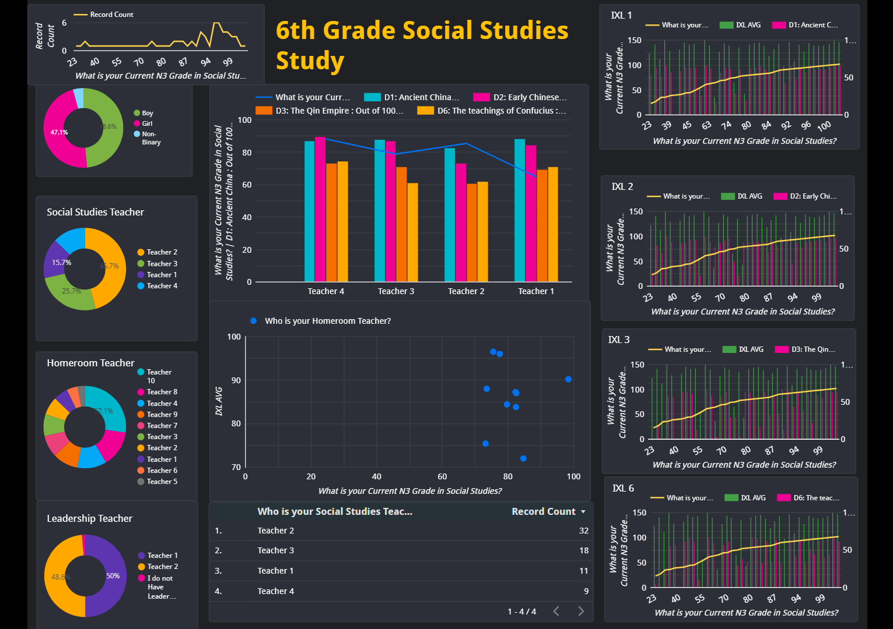
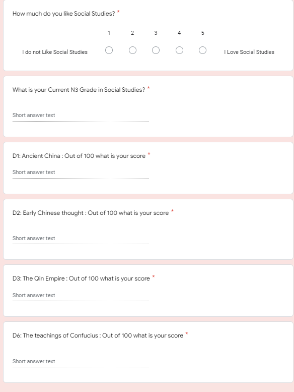
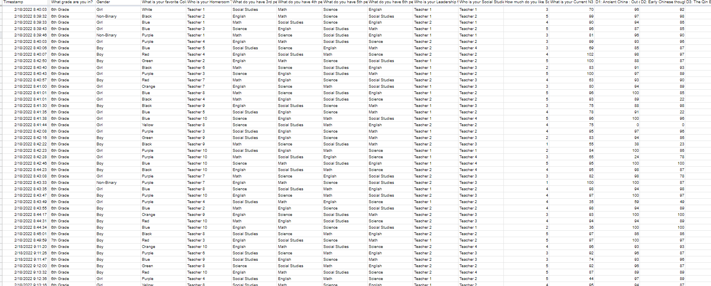

6th Grade Social studies
Project Overview:
This study is being conducted to compare student IXL data to their Benchmark and Class grades. The Goal is to show students the correlation between their IXL work and their achievement on standardized test and class grades.
This is an ongoing project that will be updated periodically as new information is collected.
Step 1: Data Collection
Data was collected directly from students utilizing a Google Form. This is a familiar format for students, but relies on student's honesty for accuracy. Future Benchmark grades will be supplied through the district for comparison.
Below is a portion of the Google Form that was used for data collection:

Step 2: Data Cleaning
Once the Data was collected, I cleaned up the Student input data. This included adjusting Grade inputs to the same format and removal of unnecessary information.
Please note all data was also adjusted to remove student and teacher specifics for this posting.

Step 3: Data Visualization
Once data was collected a visual dashboard was created in order to visualize the data for easier consumption. The goal of this dashboard was to identify a correlation between IXL scores and a student's N3 (current class grade). Secondary goal was to identify trends from one teacher or group of students towards another. This data should help inform teachers and students alike as to how IXL scores impact their overall grades.
Step 4: Future Additions
While N3 grades are what is currently being used, the Ultimate goal is to compare student IXL scores and Current class grades with their benchmark or standerdized test scores. This information would be vital to teachers and students alike. It would help show teachers if their scores are artificially inflated or how closely IXL scores correlate towards a students subject mastery. This can also be used for teachers to help alter their approaches to teaching specific standards by comparing one teachers methods and results towards another. This data can also help to justify the utilization or disregard of specific IXL assignments and give teachers a data backed approach when dealing with parents.
For students this information will help show how the effort placed on IXL assignments has a large impact on their overall mastery on a subject. This should help to motivate students to do their best but also give teachers a place to show students how best to proceed to improve on a given subject.